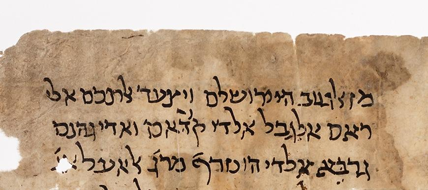
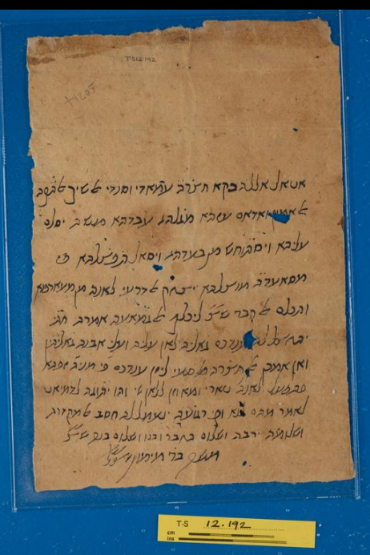
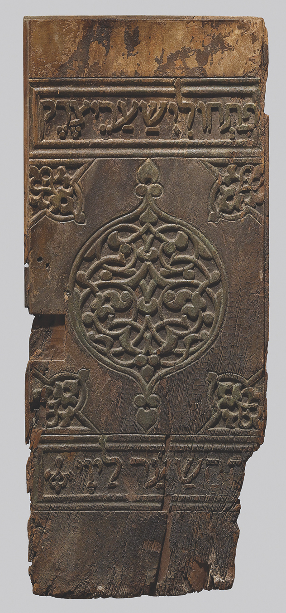
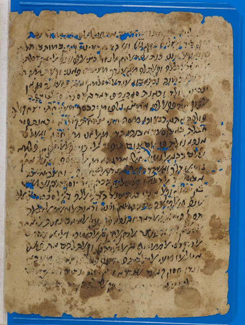

|
 Hebrew document from the Cairo genizah |
Jewish Cairo |
|
When Fustat was founded, a Jewish community grew up, which would remain a part of the population of the Cairo area until the 20th century. We know a remarkable amount about the medieval Jewish community of Cairo, in part because some very famous Jewish scholars lived there or visited and wrote about it, and in part because of its genizah. Jewish custom prohibits the destruction of any piece of writing with God's name. Instead, such documents must be "buried" in a genizah. For a thousand years, a room in the Ben Ezra Synagogue in Fustat was used as a the genizah for its community, and, because Egypt has a very dry climate, the documents were extremely well preserved for centuries. In 1896, the Cambridge scholar Solomon Schechter investigated this genizah, which contained more than 210,000 pages of text, dating mostly from the 10th to the 13th centuries. The Cairo Jewish community gave him permission to take away whatever he wanted, and he took most of it; the documents are now found in libraries throughout the world. Many of the Cairo genizah documents were fragments of books, but 5% of them are documents that include letters, court records, marriage contracts, deeds of divorce, wills, business accounts, book lists, lists of charitable gifts, poems, amulets, and petitions to Muslim authories. They are written in Hebrew and Aramaic, and mostly in Judaeo-Arabic (Arabic written in Hebrew characters). The genizah includes documents in the hand of Cairo's most famous Jewish resident, Maimonides (Moses ben Maimon), who settled in Fustat in 1168 and lived there until his death in 1204. Originally from Spain, Maimonides earned a living as a physician, including serving Saladin, but he was also a scholar of Jewish law and philosophy, and wrote his most famous work, The Guide to the Perplexed, in Fustat. Letter from the Genizah, in the hand of Maimonides, a recommendation for Isaac al-Dar'i and his son  |
Wooden door from a Torah shrine with Hebrew inscriptions, Ben Ezra Synagogue, Fustat, 1020s-1080s (87.3 x 36.7 x 2.5 cm). The door probably remained in place until the 1890s, when it was put in the genizah; now it is in the Walters Art Museum, Baltimore  |
|
The Jewish traveller Benjamin of Tudela wrote an account of his journey, The Book of Travels, in Hebrew. He left Spain sometime between 1159 and 1163, and returned home in 1172; in those years, he went through (in order) France, Italy, Greece, Constantinople, Asia Minor, Damascus, Baghdad, Jerusalem, Basra, by sea around the Arabian Peninsula, Egypt, and Sicily. We don't know why he went, whether for trade or on pilgrimage; he was very interested in the Jewish communities in every place that he went, paying particular attention to cities. In 1168-70 Benjamin was in Cairo, and he describes the Jewish community there as having 7000 inhabitants with two synagogues, one for the Jews of Syria Palaestina and one for the Jews of Babylonia. In fact, there was also a third community of Jews, the Karaites, a Jewish sect that arose in the 8th century, whose followers rejected the teachings of the rabbis of Babylonia and Syria Palaestina. These three communities seem to have lived side-by-side in Fustat, and, according to genizah documents, they frequently intermarried. The politics of the Jewish communities was complex. Until the 11th century, the Jews of Egypt fell under the authority of the leader of the rabbinic school of Jerusalem. Starting in the 1060s, the Fatimid caliph appointed a Jewish leader in Fustat to be the leader of the Egyptian Jewish community, or nagid. Benjamin of Tudela says that this official was head of all the Jewish congregations in Egypt, appointed rabbis and officials, and represented the Jews at the court of the caliph. Competition between the various Jewish communities, and between individual Jewish leaders, was fierce, and depended both on local authority and on connections with Jewish communities abroad. |
|
Jews participated in many kinds of business in Fatimid Cairo. They were particularly inolved in cloth production and trade, silk dyeing, and the production of medical and culinary plants. Jewish mercantile families had many branches throughout Europe and Asia, enabling them to participate in both local and very long-distance trade as far as India. The wealthy and prominent Jews in the community tended to come from these families, but also included physicans and scholars. |
|
|
While Jewish scholars and leaders were men, we learn from the genizah documents that women, too, were involved in business and were active participants in the lives of their families. There are letters from women to relatives and to officials; there are marriage documents spelling out the dowries and the rights of women after marriage; there are petitions attesting to the poverty of widows and divorcées and women with husbands on long journeys, and their attempts to gain protection and support for their children. The most famous woman attested in the genizah documents is Wuhsha al-Dallala ("the money-lender"), the daughter of a Jewish banker from Alexandria who lived in Fustat at the end of the 11th century. She was a businesswoman, who married and had a daughter, then divorced her husband, after which she had a son born out of wedlock. Her will survives, and her bequests total 689 dinars (a large amount). She left over 300 dinars to her son, plus money to to pay for an in-house tutor for him, but also left money for an elaborate funeral, to her brother and sisters, and for donations to Cairo synagogues. She specifically noted that she did not leave any money to the father of her son! |
Document from the Genizah, confirming the illegitimate birth of the son of Wuhsha al-Dallala, probably written when he was arranging a marriage in the 1120s  |
*Much of this information was taken from
https://oi.uchicago.edu/sites/oi.uchicago.edu/files/uploads/shared/docs/oimp38.pdf
Mark R. Cohen, Jewish Self-government In Medieval Egypt: the Origins of the Office of Head of the Jews, ca. 1065-1126. Princeton, N.J.: Princeton University Press, 1980.
Mark R. Cohen, "Poverty: Jewish Women in Medieval Egypt," in The Encylopedia of Jewish Women, https://jwa.org/encyclopedia/article/poverty-jewish-women-in-medieval-egypt